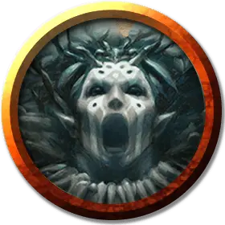

Шаман Голгари
Golgari Shaman
Средний Гуманоид (Эльф), нейтрально-злой

Класс Доспеха 14 (шкурный доспех)
Хиты 88 (16к8 + 16)
Скорость 30 футов
| мод | спас | ||
|---|---|---|---|
| СИЛ | 11 | +0 | +0 |
| ЛОВ | 15 | +2 | +2 |
| ТЕЛ | 12 | +1 | +4 |
| мод | спас | ||
|---|---|---|---|
| ИНТ | 12 | +1 | +1 |
| МДР | 17 | +3 | +6 |
| ХАР | 16 | +3 | +3 |
Навыки Магия +4, Природа +4, Проницательность +6, Религия +4
Чувства пассивное Восприятие 13
Языки Общий, Эльфийский
Опасность 5 (1800 опыта)
Бонус мастерства +3
Особенности
Наследие фей. Шаман совершает с преимуществом спасброски от состояния очарованный и его не может усыпить магия.
Использование заклинаний. Шаман является заклинателем Голгари 8-го уровня. Его базовой характеристикой заклинаний является Мудрость (Сл спасброска от заклинаний 14, +6 к попаданию атаками заклинаниями). У него подготовлены следующие заклинания друида:
• Заговоры (неограниченно): ядовитые брызги [poison spray], дубинка [shillelagh], терновый кнут [thorn whip];
• 1 уровень (4 ячейки): лечение ран [cure wounds], опутывание [entangle], луч болезни [ray of sickness];
• 2 уровень (3 ячейки): бесследное передвижение [pass without trace], луч слабости [ray of enfeeblement], шипы [spike growth];
• 3 уровень (3 ячейки): восставший труп [animate dead], рассеивание магии [dispel magic], рост растений [plant growth];
• 4 уровень (2 ячейки): порча [bane], гигантское насекомое [giant insect].
Действия
Боевой посох. Рукопашная атака оружием: +4 к попаданию, досягаемость 5 фт., одна цель. Попадание: 5 (1к6 + 2) дробящего урона или 6 (1к8 + 2) дробящего урона, если используется двумя руками.
Грибковая гниль. Рукопашная атака заклинанием: +6 к попаданию, досягаемость 5 фт., одна цель. Попадание: 9 (2к8) урона некротической энергией, и цель должна совершить спасбросок Телосложения Сл 14, при провале получая 18 (4к8) урона ядом или половину этого урона при успехе.
Реакции
Подпитка смертью. Когда хиты существа в пределах 30 футов от шамана опускаются до 0, шаман получает 5 (1к10) временных хитов.
Описание
Шаманы Голгари — духовные лидеры Роя Голгари. Они учат верованиям гильдии о циклах природы, используя свою некромантию, чтобы показать, как жизнь возникает из смерти.
Шаманы Голгари раскрашивают свои лица, чтобы казалось, что у них есть дополнительные глаза на щеках и подбородках. Иногда они используют магическую краску узоров настроения [moodmark Paint], что позволяет им общаться с помощью этих меток. Они носят одежду, украшенную панцирями жуков, паутиной или полочным грибком.
Логово Голгари. Члены Роя Голгари тесно связаны со своей территорией. Когда хотя бы шесть Голгари вместе защищают свою территорию, они могут призвать на помощь окружающую среду. В группу должен входить Джарад Вод Саво или хотя бы один шаман Голгари, жрец смерти краулов [kraul Death Priest], подземная медуза [undercity Medusa] или лич-Девкарин [devkarin Lich]. При определении сложности такого столкновения считайте логово одним дополнительным существом с показателем опасности 1.